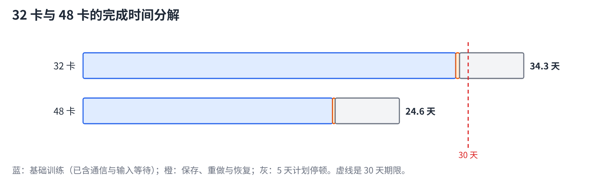
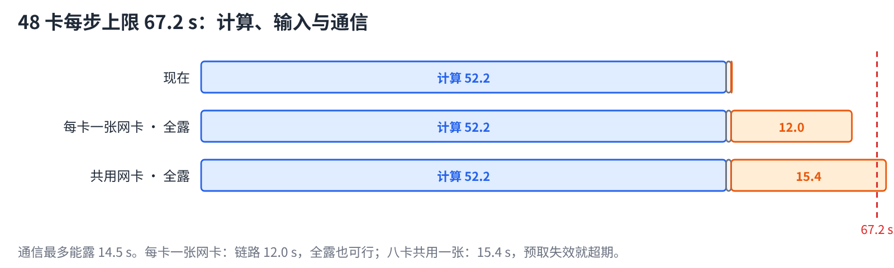
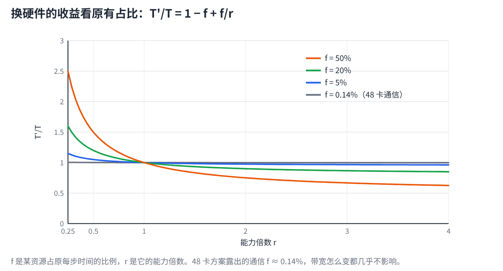
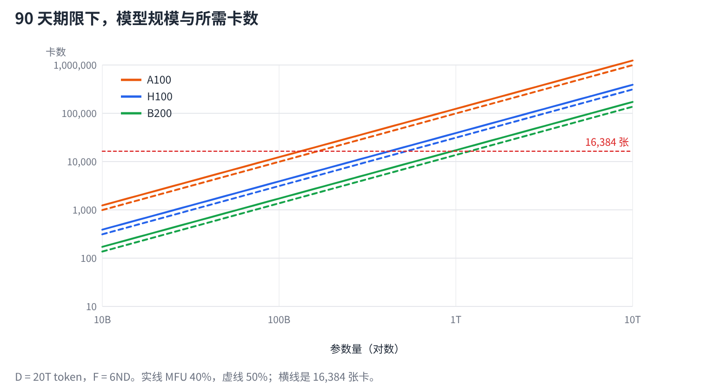
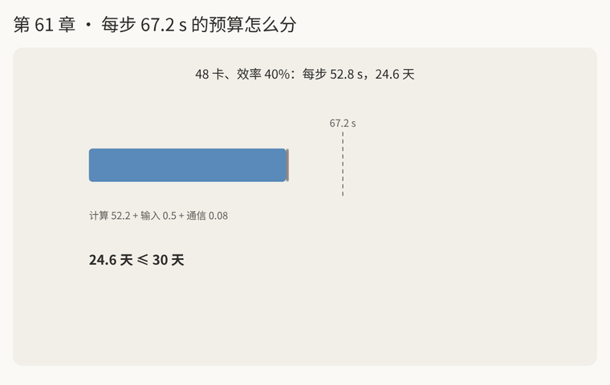

第 61 章 · 从系统方案到期限与硬件选择：32 卡还是 48 卡
本地运行
git clone https://github.com/wikieden/ai-infra-from-constraints
cd ai-infra-from-constraints/code/notebooks
pip install jupyterlab torch numpy
jupyter lab ch61_training_choice.ipynb也可以下载后直接用 VS Code 打开 .ipynb 运行。需要 GPU 的章节在 Colab 里选「代码执行程序 → 更改运行时类型 → GPU」。
本章回答：把容量、每步时间、保存恢复和计划停顿加起来，32 卡和 48 卡各多少天完成？48 卡每步还剩多少余量，通信最多能露多少？32 卡要把效率提到多少才赶得上？八卡共用一张网卡为什么把按期完成押在了重叠上？换硬件时怎么用 Amdahl 判断值不值？1T 模型、20T token，16,384 张卡要多少天？
讲解日期：2026-11-24 · 上一章：第 60 章 强化学习训练系统 · 下一章：第 62 章 Agent 任务的资源需求与运行环境
对应原文：materials/ai-infra-book/manuscripts/10-训练系统.md§10.6 L765–L855（图 10-45 至 10-47）
本章缩写：MFU = Model FLOPs Utilization（模型 / 浮点运算 / 利用率）· PCIe = Peripheral Component Interconnect Express（外设 / 组件 / 互连 / 高速）。全部缩写见 缩写与术语表
讲解
第一步：把所有项加起来（2026-11-24）
类比：装修总工期。 每天的工时 × 天数，再加返工的比例，再加验收、等材料的固定天数。
原文 L767–L798：
| 设计项 | 32 卡 | 48 卡 |
|---|---|---|
| 八卡主机 | 4 | 6 |
| 每卡累积 micro-batch | 12 | 8 |
| 每卡显存 / 可用（GiB） | 13.8 / 22 | 12.5 / 22 |
| 每步单卡计算 | 78.3 s | 52.2 s |
| ZeRO-3 链路时间（PCIe 4.0 x16） | 17.9 s | 12.0 s |
| 每步通信等待 | 0.08 s | 0.08 s |
| 每步输入等待 | 0.5 s | 0.5 s |
| 每步训练时间 | 78.9 s | 52.8 s |
| 保存、重做与恢复 | 1.02% | 1.08% |
| 基础训练 | 29.0 天 | 19.4 天 |
| 加保存恢复和 5 天预留 | 34.3 天 | 24.6 天 |

图 61-1 · 差别几乎全在蓝色的基础训练时间；保存恢复只占一小段。
选 48 卡：两者容量都够，32 卡超过 30 天，48 卡约 24.6 天，剩 5.4 天。多卡的价值是每卡活少了，多出的故障成本只抵消很小一部分。
一句话：完成时间 = 停顿 + 步数 × 每步 × (1 + 附加比例)。
第二步：可行范围与调优目标（2026-11-24）
类比：预算里还剩多少钱能花在哪。
原文 L800–L814：把 5.4 天余量摊回每步：
- 48 卡 52.8 s，余量 14.4 s/步；扣掉计算 52.2 s 和输入 0.5 s，通信最多能露 14.5 s，现在只露 0.08 s。即使预取全失效，12.0 s 全露，每步约 64.8 s，仍可行。
- 32 卡：留给计算约 66.7 s，40% 效率要 78.3 s，需要把效率提到 \(40\% \times 78.3/66.7 \approx 47\%\)——比 Llama 3 报告的最高 43% 还高。两条路线可以直接比：加两台主机，或把效率从 40% 提到 47%。
- 网卡配置：八卡共用一张 200 Gbit/s，环形集合通信进出主机那条边要承载全部（第 38 章的割集），385 GB / 25 GB/s ≈ 15.4 s > 14.5 s。预取有效时仍只露首尾两次；预取一旦失效，每步约 68.1 s，超期。共用网卡把按期完成押在重叠上，每卡一张网卡不依赖重叠。

图 61-2 · 调优先砍超出预算的那段关键路径；显存够用就不必为省显存加额外工作。
一句话：余量换算成每步秒数，才知道哪一项还能放多大。
第三步：换硬件看占比（2026-11-24）
类比：修一段路能省多少时间，看那段路在全程里占多少。
原文 L816–L832：某资源占原每步时间的比例 \(f\)，能力变成 \(r\) 倍：
- 100 ms 里通信 5 ms，带宽减半 → 105 ms（+5%）；通信 50 ms → 150 ms（+50%）。
- 48 卡方案：露出的通信只占 0.14%。PCIe 带宽减半，每 micro-batch 链路 3.0 s 仍短于 6.53 s 计算，露出部分翻倍到约 0.15 s，每步 52.8 → 52.9 s，几乎不变。
- 单卡效率 40% → 30%：单卡 69.6 s、每步 70.2 s，超过 67.2 s。对这套方案，决定成败的是单卡计算效率，不是带宽。

图 61-3 · 等某资源的时间占比越小，它变快或变慢的影响越小。
比较 A100、A800、H20 时，把单卡计算、接口传输和容量代进同一套分析；满足期限的方案再比租用、能源和准备成本。
一句话：硬件的某项指标值不值钱，看它在当前每步时间里占多大比例。
第四步：放大到模型规模（2026-11-24）
类比：房子扩建一倍，工人要加几倍，取决于材料（数据）是不是也翻倍。
原文 L834–L854：稠密模型 \(F = 6ND\)：
| 1T 参数、20T token、16,384 张卡 | MFU 40% | MFU 50% |
|---|---|---|
| A100（312 TFLOP/s） | 679 天 | — |
| H100（989 TFLOP/s） | 214 天 | — |
| B200（约 2.25 PFLOP/s） | 94 天（90 天要 17,147 张） | 75 天 |

图 61-4 · 实线 MFU 40%，虚线 50%；横线是 16,384 张卡。MFU 差 10 个百分点，就决定 B200 能否在 90 天内训完 1T 模型。
- 固定数据量，参数 5 倍 → 计算 5 倍；数据也按 \(D = 20N\) 放大，\(F = 120N^2\)，参数 5 倍 → 计算 25 倍。
- MoE 分开算：状态按全部可训练参数，执行按激活路径，再把专家交换放进关键路径。
- 设计完要用公开训练日志检验长期速率：本次新增 token ÷ 本次时间。
场景代码：用 PyTorch profiler 量出每步里计算、通信、等待各占多少，才能代进 Amdahl（真实 API）：
from torch.profiler import profile, ProfilerActivity, schedule
with profile(activities=[ProfilerActivity.CPU, ProfilerActivity.CUDA],
schedule=schedule(wait=1, warmup=1, active=3)) as prof:
for _ in range(5):
train_step(); prof.step()
print(prof.key_averages().table(sort_by="cuda_time_total", row_limit=15)) # 看 nccl:all_gather 等的占比
一句话：规模问题由模型和数据一起定，卡数边界随效率平移。
动画演示：每步预算怎么分

可交互版：animations/61-training-choice.html（滑块：卡数 24–96；单卡效率 20–60%；暴露的通信 0–20 s；输入等待 0–5 s）。
怎么看：
- 一根横条分成计算（蓝）、通信（橙）、输入（灰），虚线是每步上限 67.2 s（第二步）；
- 右边是完成天数，超过 30 天标红；
- 播放：48 卡 40%（24.6 天）→ 32 卡（34.3 天）→ 32 卡效率 47%（刚好）→ 48 卡预取全失效（12 s 露出，仍可行）→ 48 卡效率 30%（超）。
练习与作答记录
题 1（第一步）：64 卡、每步计算 39.2 s、通信与输入 0.6 s、附加 1.1%。完成时间多少天（加 5 天预留）？
作答记录：（待作答）
题 2（第三步）：一步 60 s 里通信露出 12 s。网卡升级到 2 倍带宽，每步多少？算力升级 1.5 倍（通信不变）呢？
作答记录：（待作答）
题 3（第四步）：300B 参数、15T token、8,192 张 H100、MFU 45%。需要多少天？
作答记录：（待作答）
口诀
总工期 = 等材料 + 天数 × 每天工时 × (1 + 返工)；
剩下的预算摊回每天，才知道哪项还能花；
修路省多少，看那段路占全程多少；
扩建要加几倍人，看材料是不是也翻倍。
本章复习卡片
I204（T_finish 汇总：32 卡 34.3 天、48 卡 24.6 天；每步上限 67.2 s、余量 14.4 s；32 卡要 47% 效率；共用网卡 15.4 s 押在重叠上）、I205（T'/T = 1 − f + f/r：带宽减半 52.9 s、效率 30% 70.2 s；p ≥ 6ND/(PηT)：1T 模型 679 / 214 / 94 天）。练习做完后，按答错、卡住的地方再补。
附录 · 延伸阅读
留给以后深入学习用，不影响本章主线。★ 是建议先读的。
推荐阅读
| 读什么 | 读哪里 | 读它为了什么 |
|---|---|---|
| ★ AII 第 10 章 | §10.6 L765–L855 | 本章原文 |
| Llama 3 论文（Meta 2024） | 训练基础设施一节 | MFU 38%–43% |
| 第 30 章 从局部优化到完整请求 | Amdahl | 同一个公式 |
| 第 18 章 Scaling law 与全生命周期成本 | 6ND、D = 20N | 规模 |
| distributed-pretraining 学习计划 | ZeRO、流水线 | 补基础 |
数学原理
- 一阶完成时间模型：步数 × 每步 × (1 + L) + 固定停顿。
- Amdahl：只有占比 \(f\) 的部分被加速 \(r\) 倍。
- 规模：\(F = 6ND\)，\(D \propto N\) 时 \(F \propto N^2\)。
公式清单
| 公式 | 意思 |
|---|---|
| \(T_{\mathrm{finish}} = T_0 + \lceil D/b \rceil t_s(1 + L)\) | 完成时间 |
| \(t_s \le T_{\mathrm{avail}}/(\text{步数}(1 + L))\) | 每步上限 |
| \(T'/T = 1 - f + f/r\) | 换硬件 |
| \(p \ge 6ND/(P\eta T)\) | 规模的卡数边界 |
代码对照：把本章的数字用代码算一遍
代码
ai-infra/solutions/chapter-code/ch61_training_choice.py，测试tests/test_ch61.py：
bash cd ai-infra/solutions/chapter-code uv run python ch61_training_choice.py uv run pytest tests/test_ch61.py
| 讲义 | 写法 | 跑出来 |
|---|---|---|
| 第一步 | finish_days(ts, L) |
34.3 / 24.6 天 |
| 第二步 | step_budget() |
67.2 s；余量 14.4 s；47%；15.4 s |
| 第三步 | amdahl(f, r) |
105 / 150 ms；70.2 s |
| 第四步 | days_needed(...)、cards_needed(...) |
679 / 214 / 94 天；17,147 张；75 天 |
代码里才看得到的 3 件事：
- 预取全失效那行按 52.2 + 12.0 + 0.5 = 64.7 s，原文写 64.8 s（链路时间未取整为 12.03 s）。
- B200 的稠密 BF16 峰值用 2.25 PFLOP/s，正好复现 94 天；换别的峰值数字天数会变。
step_budget的 25 天是 30 天扣掉 5 天预留；附加比例 1.08% 来自第 59 章。
自己改一改（不影响练习答案）：
- 把
finish_days的预留改成 3 天，看 32 卡要多少效率。 - 用
amdahl画 48 卡方案换成 PCIe 3.0（16 GB/s）且预取失效时的每步时间。 - 用
cards_needed找 B200、MFU 40% 时 90 天能训的最大模型（D = 20N）。